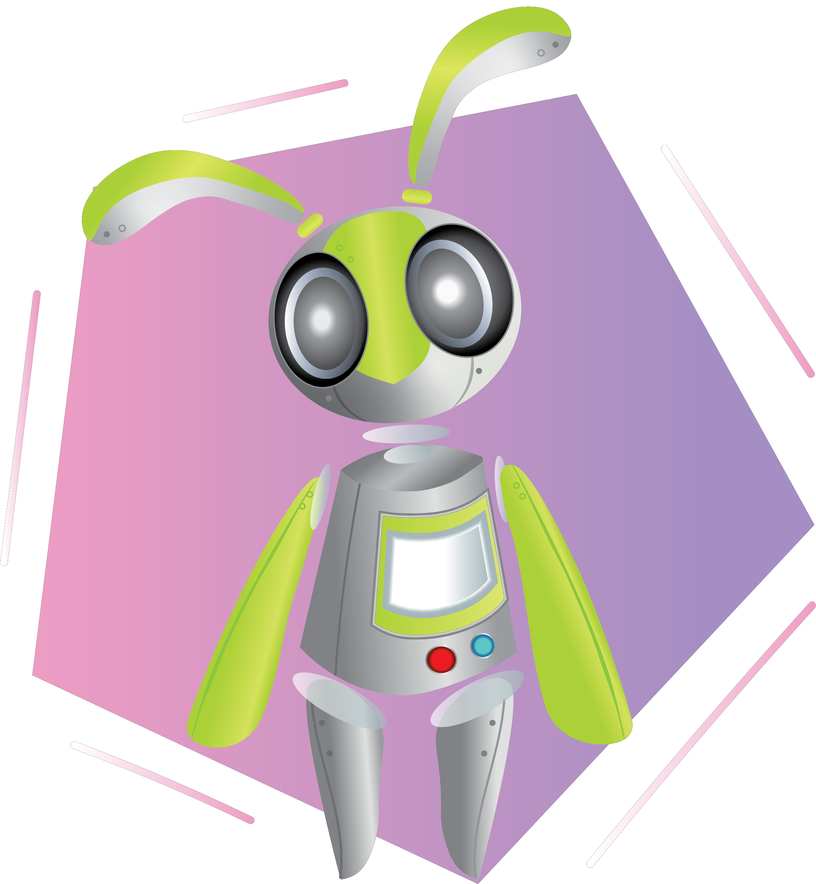

Linh Nguyen
Ever since I could pick up a pencil, art has been a vital part of my life. Growing up surrounded by a family of artists, it fueled my own passions and aspirations. My childhood love for cartoons developed into not just a general apprecation for art, but a deep admiration for character design and visual development.
As an aspiring illustrator, I'm currently studying Emerging Media at Seminole State College, with hopes of transferring to select art schools. I enjoy creating and exploring with digital mediums, and I aim to develop work that not only catches the eye, but also develops with me as I strive towards my career.
—Skills—
| Digital Media |
Illustration |
| Multimedia |
Character Design |
| GitHub |
HTML |
| Video Editing |
Graphic Design |
| Research Abilites |
Audio Mixing |
—Software—
| Photoshop |
Illustrator |
| Procreate |
Clip Studio Paint Pro |
| Adobe Audition |
Premiere Pro |
—Portfolio—
Previous Work



Original Work


Contact